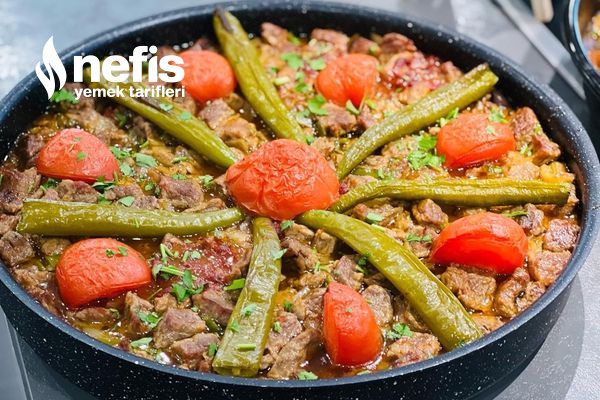

Şehzade Kebabı Tarifi Nasıl Yapılır?
Öncelikle etlerimizi tencereye alıyoruz.
Üzerini geçecek kadar su koyup haşlıyoruz.
Patlıcanları küp küp doğrayıp tuzlu suda 20 dk kadar bekletiyoruz.
Daha sonra kızgın yağda kızartıyoruz.
Ayrı bir tavaya zeytinyağ koyup ısıtıyoruz.
Soğanları küp küp doğrayıp içine ilave edip karıştırıyoruz.
Sivri biber ve sarımsak koyup kavuruyoruz.
Baharatlarını ekliyoruz,haşlanan etleri içine ilave edip karıştırıyoruz.
4-5 dk kavuruyoruz, fırın tepsisine önce patlıcanları yerleştiriyoruz.
Üzerine etleri ilave ediyoruz, üzerine domates ve sivri biber yerleştiriyoruz.
Sosu için bir yemek kaşığı salçayı 2 su bardağı et suyu ile karıştırıyoruz.
Tuzunu da ilave edip tepsimizin üzerine döküyoruz.
190 derece fırında 20-25 dk kadar kontrollü şekilde pişiriyoruz, afiyet olsun ✨🤗👌🏻.
Şehzade Kebabı Tarifi İçin Malzemeler
- 1 kilo kuş başı et
- 4-5 adet patlıcan
- 3 yemek kaşığı zeytinyağ (Sıvı yağ da olur)
- 2 adet soğan
- 3-4 diş sarımsak
- 2 adet sivri biber
- Tuz, karabiber, pul biber
Sos İçin:
- 1 yemek kaşığı salça
- 2 su bardağı et suyu
- Tuz
Üzeri İçin:
Ev Yapımı Şehzade Kebabı Tarifi Nasıl Yapılır?
- Patlıcanları küp küp doğrayıp, derin yağda kızartın.
- Bir tencerede veya düdüklü tencerede etlerinizi mühürleyin ve üzerini geçecek kadar suyu ekledikten sonra yumuşayana kadar kısık ateşte pişirin.
- Etler yumuşamaya yakın, ayrı bir tencerede yemeklik doğranmış soğanları ve biberleri sıvı yağ ile birlikte kavurun..
- Etleri de üzerine ilave ettikten sonra sarımsak, pul biber, tuz ve karabiberi ekleyip te krar karıştırın. Karıştırdıktan sonra ocaktan alın.
- Bir güveç kabının veya fırına dayanıklı kabın içerisine küp doğranmış patlıcanları koyun.
- Üzerine etli karışımı da ekleyin..
- Köy biberi ve dilimlenmiş domatesleri de yerleştirdikten sonra salçalı su karışımını üzerine dökün ve 180 derece fırında 30 dakika pişmeye bırakın.